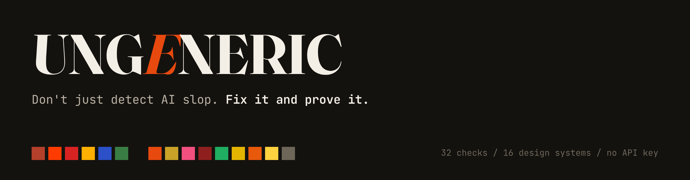
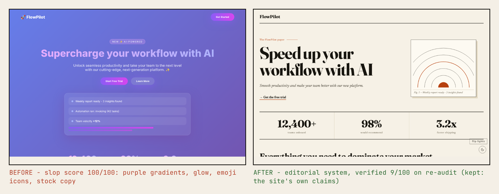

01
Audit
Score the page for slop
- 32 source checks
- 12 computed-style checks
The 12 computed-style checks run with --render.

Free · local · MIT · no account, no API key
Don't just detect AI slop. Fix it and prove it.
Before / after
Purple gradients, glow, emoji icons and stock copy scored 100. After the editorial rebuild, the re-audit scored 9. The site's own claims were kept.

How it works
01
Audit
The 12 computed-style checks run with --render.
02
Rebuild
Restyle the page, or recompose its layout. Your content and links survive.
03
Prove
The CLI exits non-zero if the output did not improve.
What it catches
Sixteen design systems
Each direction is one shareable JSON file.

Works in your agent
| Agent | How to invoke |
|---|---|
| Claude Code | /ungeneric |
| Cursor | /ungeneric |
| Codex CLI | $ungeneric |
| Google Antigravity | /ungeneric |
| GitHub Copilot / VS Code | /ungeneric in chat |
| Gemini CLI | "use ungeneric" |
| OpenCode | /ungeneric |
Install flags: --agents=claude,cursor · --all ·
--global
No agent?
node cli.mjs page.html -d swiss -o clean.html
--polish keeps the design, strips only the tells--json--directions--max-score N as a CI gate--render--annotate report.pngA local web tool (index.html) that works offline.
Honest scope
It does not generate images or call any paid service.
The slop score is a conversation starter.
The same input gives the same output, so you can diff it in CI.
It picks from 16 fixed systems rather than inventing a bespoke design.
Free, local and MIT-licensed. No account, no API key.